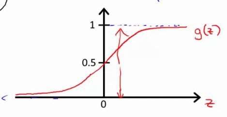

With 0 being the negative class, and 1 being the positive class.
Binary classification
A simple hypothesis is
hθ(x)=ΘTx
Which then can be thresholded at for example 0.5:
If hθ(x)≥0.5→y=1
If hθ(x)≤0.5→y=0
This can be influenced by outliers and is detrimental for the performance of the classifier.
Applying Linear Regression to a classification problem is usually not a good idea.
Also, the hypothesis can be alot bigger / smaller than 0 or 1.
Introducing Logistic Regression, where:
0≤hθ(x)≤1
Hypthesis Representation
Logistic Regression Model
We want
0≤hθ(x)≤1
Define the hypothesis as:
hθ(x)=g(ΘTx)
with the sigmoid / logistic function g(z)
g(z)=1+e−z1
That way the hypothesis becomes
hθ(x)=1+e−ΘTx1
Which looks like

And indicates what the estimated probability that y=1 on input x (hθ(x)=p(y=1∣x;θ), ie the probability that y=1, given x, parametrized by θ)
This means that the total probability must be equal to 1
Decision boundary
Given this function, we can threshold the probability by for example predicting
y=1 if hθ(x)≥0.5 then g(z)≥0.5 when z>0, so whenever ΘTx≥0
y=0 if hθ(x)≤0.5 when z<0, so whenever ΘTx≤0.
This means that
g(z)≥0.5=g(ΘTx)≥0.5
is true if z≥0
ΘTx≥0→y=1ΘTx<0→y=0
Given an hyptothesis
hθ(x)=g(=−3θ0+=1θ1x1+=1θ2x2)
Then we can predict y=1 if ΘTx−3+x1+x2≥0, and y=0 if its <0. This can be rewritten as x1+x2≥3 and x1+x2<3.
The function that divides the data into the two classes y=1 and y=0, is called the decision boundary. The decision boundary is a property of the hypothesis and of the parameters; this is not a property of the dataset. Later we use the dataset to fit a good set of parameters.
Example in the video
5−x1≥0−x1≥−5x1≤5
for y=1, or y=0 for x1≥5.
The linear case can be extended to non-linear decision boundaries, by taking for example the hypthesis:
hθ(x)=g(θ0+θ1x1+θ2x2+θ3x12+θ4x22)
With
θ=⎣⎢⎢⎢⎢⎡−10011⎦⎥⎥⎥⎥⎤
In other words predict y=1 if −1+x12+x22≥0, so if x12+x22≥1. This is a circle with radius 1, where inside the circle everything is 0 and outside everything is 1.
With higher order polynomials we can achieve more complex decision boundaries.
Cost function
Given a training set
{(x(1),y(1)),(x(2),y(2)),...,(x(m),y(m))}
With m examples, x0=1 and y∈{0,1}
x∈Rn+1⎣⎢⎢⎡x0x1x2..xn⎦⎥⎥⎤
and the generic hypothesis
hθ(x)=1+e−ΘTx1
How do we choose parameters θ?
Going back to Linear regression
J(θ)=2m1i=1∑m(hθ(x(i))−y(i))2
Where 21(hθ(x(i))−y(i))2 can be named cost
Then
Cost(hθ(x),y)=21(hθ(x)−y)2
For logistic regression this would be a non-convex function for the parameters θ, due to the fact that the sigmoid function is non-linear.
A function with many local optima is a non-convex function. In contrast, a convex function has a single 'bow-shape' and thus a single global minimum.
Writing the cost function this way asserts thatJ(θ)is convex for logistic regression
Multiclass Classification - One vs All
Examples:
Email tagging: work / friends / adverts / family (four classes y=[1,2,3,4])
Weather: sunny / cloudy / rain / snow
One vs all - one vs rest
Example 3 classes → become three seperate binary classifiers. Train a logistic regression classifier for each class i to predict the probability that y=i.
hθ(x)(1)(x)→P(y=1∣x;θ)
hθ(x)(2)(x)→P(y=2∣x;θ)
hθ(x)(3)(x)→P(y=3∣x;θ)
On a new input x, pick the class that maximizes maxihθ(x)(i)
This makes sure that you can keep a complex curve, but not high variance. If λ is too big, we penalize too much (all parameters become close to zero) ergo underfitting will occur (hypothesis = 0) and it will fail to even fit the training set.
NOTE: we dont penalize theta0!!
Regularized Linear Regression
Previously: GD & normal eq.
Gradient Descent
We had the following regularized cost function:
J(θ)=2m1[i=1∑m(hθ(x(i))−y(i))2+λi=1∑nθj2]
If we want to find the GD updates we can modify the partial derivative as follows (only for j≥1):
With L being an eye matrix of dimension (n+1 x n+1) with element [0,0] being 0.
Non invertibility
Consider a case where m<n, so less examples than features. this means the solution to θ is singular/non invertible (may be non-invertible if m=n). Octave's pinv function will give you a result that makes a bit of sense, but careful if you use different language.
However, regularization takes care of this if λ>0.